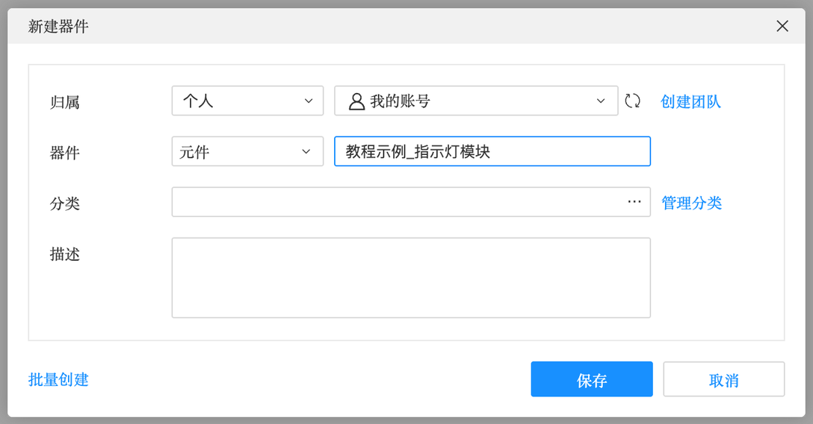
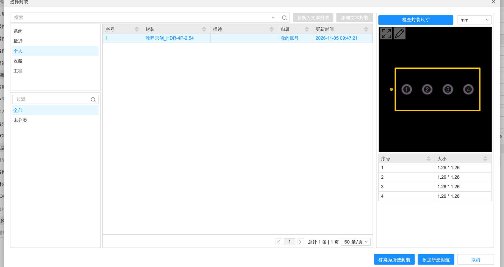
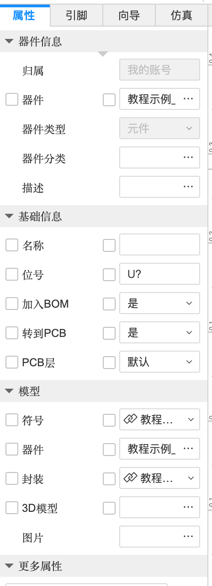
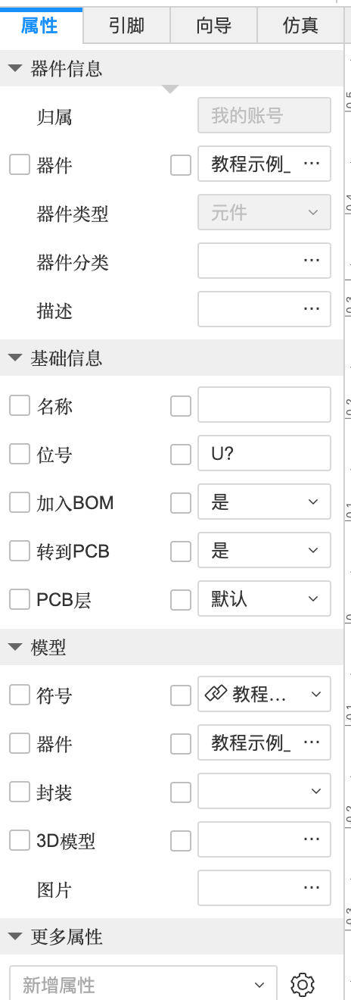

5.1 库的组成与创建器件
元件库里找不到想要的元件、或者想做一个独一无二的元件（比如你自己设计的模块、一个专属 Logo），就要自己建库。这一页先讲清楚“器件”是由哪几样东西拼成的、库分几种，再完整走一遍：新建器件 → 画符号 → 画封装 → 绑定。
器件是由什么组成的#
在 A-2 里你见过“器件三联图”：符号、封装、3D。现在把它讲完整——一个器件（Device）就像一张“身份证”，上面贴着几样东西：
符号的引脚和封装的焊盘怎么对上？#
靠编号：符号的 1 号引脚 ↔ 封装的 1 号焊盘，2 号 ↔ 2 号……编号一致就自动对应。所以画符号和画封装时，编号一定要和规格书一致。名字（VCC、GND）只是给人看的，软件按编号连线。
库有哪几种#
| 库 | 谁维护 | 在哪看 | 特点 |
|---|---|---|---|
| 系统库（嘉立创EDA） | 官方 | 底部库面板 →「系统」 | 数量最多，只读 |
| 立创商城库 | 官方，和商城同步 | 库面板来源选「立创商城」 | 能看库存、价格、基础库/扩展库；下单最方便 |
| 标准版公开库 | 标准版用户共享的 | 库面板 →「标准版公开」 | 数量多，质量参差，用前要检查 |
| 个人库 | 你自己 | 库面板 →「个人」 | 你建的元件默认存这里，所有工程都能用 |
| 团队库 | 团队成员 | 切换到团队工作区后 | 团队共享 |
| 工程库 | 自动 | 库面板 →「工程」 | 当前工程里用到的器件副本（4.1） |
创建器件：完整流程（实测）#
本教程在练习工程里实际做了一个“指示灯模块”器件：一个 4 脚的小模块，引脚是 VCC、GND、IN、OUT，配一个 1×4 的 2.54 mm 排针封装。步骤如下：
① 新建器件#
- 「文件」→「新建」→「器件…」
- 填写下面的对话框，点「保存」

新建器件
| 字段 | 含义 | 建议 |
|---|---|---|
| 归属 | 存到个人库还是某个团队库；没有团队可以点「创建团队」 | 个人 |
| 器件 | 器件名称 | 起个能看懂的名字，比如“教程示例_指示灯模块” |
| 类型 | 元件（普通元件）等 | 元件 |
| 分类 | 放进哪个分类文件夹（「管理分类」可以新建） | 可不填 |
| 描述 | 备注说明 | 写上用途、来源 |
| 批量创建 | 一次建一批器件（高级用法） | — |
保存后会自动打开一个以器件名命名的新标签页，里面就是符号编辑器（5.2）。
② 画符号 → ③ 画封装 → ④ 绑定#
符号用符号向导一键生成，再改引脚名（5.2）；封装用封装向导一键生成（5.3）；最后回到器件，在左侧「属性」→「模型」→「封装」里选上刚画的封装：


- 在器件标签页左侧切到「属性」，找到「模型 → 封装」，点下拉箭头 →「添加封装…」
- 左侧来源树选「个人」，在列表里点你的封装
- 点「添加所选封装」（「替换为所选封装」用于换掉已有的封装）
- ⌘S 保存。之后在底部库面板 →「个人」里就能搜到这个器件，像系统元件一样放到原理图上
器件属性面板#

器件属性
| 分组 / 字段 | 含义 |
|---|---|
| 器件信息：归属 / 器件 / 器件类型 / 器件分类 / 描述 | 新建时填的那些 |
| 基础信息：名称 | 器件在原理图上显示的名字 |
| 位号 | 默认位号前缀，如 U?、R?、LED?，放置后 ? 自动变成数字 |
| 加入BOM / 转到PCB / PCB层 | 同原理图元件属性（A-2） |
| 模型：符号 / 器件 / 封装 / 3D模型 / 图片 | 这个器件用哪个符号、哪个封装、哪个 3D 模型，以及实物图 |
| 更多属性：新增属性 | 自己加属性，比如“制造商”“供应商编号（C 编号）”“数据手册链接” |
| 每行前面的勾选框 | 勾上表示这个属性在原理图上显示出来 |